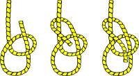

Bowline
by Misty C. Shore | misty.c@shore.com The bowline is an ancient and simple knot used to form a fixed loop at the end of a rope. It has the virtues of being both easy to tie and untie; most notably, it is easy to untie after being subjected to a load. Read more…